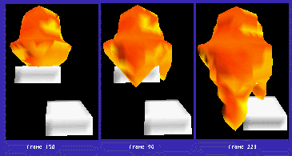

This is a snapshot of our CAVE porous media simulation. We are demonstrating what we hope will become a useful tool for environmental engineers. In this case, precomputed data of a workstation is transmitted to the CAVE where the data is visualize. In this image, you can see an oil saturation isosurface inside the ground ten years after a leak started at the surface. The surface has variable permeability. (Permeability is a measurement of how easily fluids of various types can move through a porous medium.) Most of the ground has a sandy composition but there are two shelves of clay (not shown) in the simulation. This is why the oil appears to have progressed less in the foreground than the background. Two fingers of oil run around the sides of one of the clay shelves in the background.
On the right, you can see some of the user interface. In addition to exploring the data in the CAVE by moving about in the virtual environment, investigators control simulation with VCR-like buttons to move forward or backward in time. The CAVE wand is used to rotate the cube or adjust other viewing parameters such as which isosurfaces one wishes to view (water, oil, permeability, etc.) the isosurface level.
This time the simulation was computed separately and stored in a file for later viewing. However, the investigators can also view simulation data from the NCSA Power Challenge Array as it is computed in real time. This is important as scientists vary simulation parameters to assess the environmental impact of different events and strategies.
This experimental projection has the following parameters:

Investigators can view many months of oil flow in a few seconds using our simulation. The image above (click for full size) shows several frames of oil saturation evolution around the two shelves of clay (shown in white). Each frame is one half of a month (15 days) of progression.
LF-Rossi@nwu.edu